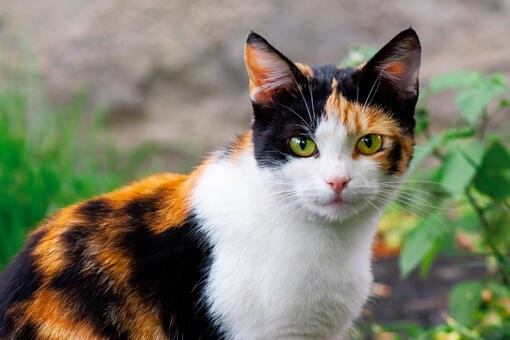
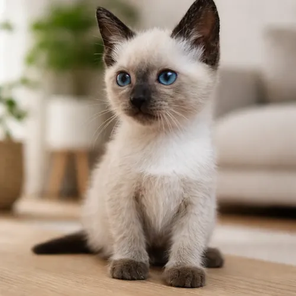
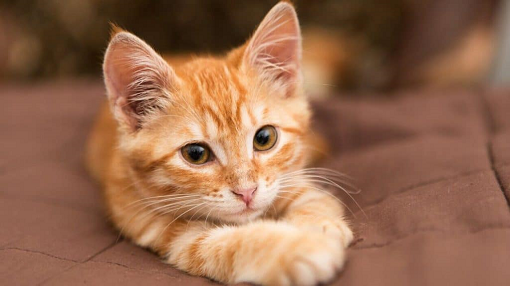
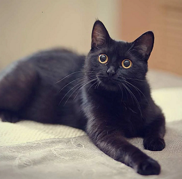
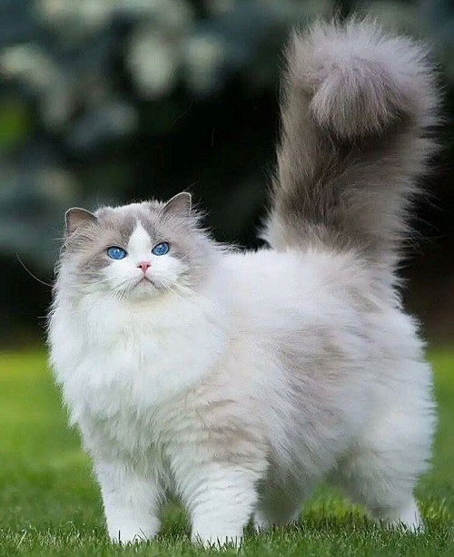

| Gato calico | Gato siames | Gato naranja | Gato negro | Gato persa |

Gatos calicó Los gatos calicó son conocidos por su hermoso pelaje de tres colores: blanco, naranja y negro. Cada gato tiene un patrón de manchas diferente, por lo que cada uno es único. Características La mayoría de los gatos calicó son hembras debido a su genética. Pueden tener pelo corto o largo y su personalidad puede ser cariñosa, juguetona, curiosa o independiente. ¿Por qué tienen tres colores? Los colores naranja y negro están relacionados con el cromosoma X, mientras que el color blanco depende de otros factores genéticos. Esta combinación produce su característico pelaje de tres colores. ¿Son una raza? Los gatos calicó no son una raza específica, sino gatos que presentan una combinación particular de colores. Pueden tener diferentes tamaños y tipos de pelo. Datos curiosos Los machos calicó son muy raros. Cada gato calicó tiene un patrón de manchas único. En algunas culturas se consideran símbolos de buena suerte. Pueden vivir entre 12 y 18 años, o incluso más con buenos cuidados. Suelen confundirse con los gatos carey, pero los calicó tienen manchas blancas más visibles, además de negro y naranja.

Gatos siameses Los gatos siameses son conocidos por su cuerpo elegante, sus ojos azules y su pelaje claro con zonas oscuras en la cara, las orejas, las patas y la cola. Características Son gatos inteligentes, curiosos y sociables. Les gusta jugar, convivir con las personas y comunicarse mediante maullidos. ¿De dónde provienen? Son originarios de Tailandia, país que antiguamente era conocido como Siam. Por eso reciben el nombre de gatos siameses. ¿Cómo son sus ojos? Sus ojos suelen ser de un azul intenso, una de sus características más reconocidas. Datos curiosos Los gatos siameses suelen ser muy comunicativos. Su pelaje presenta colores más oscuros en las extremidades. Son activos y disfrutan de los juegos. Pueden vivir muchos años con buenos cuidados.

Gatos naranjas Los gatos naranjas se caracterizan por su pelaje de color anaranjado, dorado o crema. Algunos tienen rayas y manchas que hacen que su apariencia sea muy especial. Características Pueden tener pelo corto o largo. Muchos son juguetones, curiosos y cariñosos, aunque cada gato tiene su propia personalidad. ¿Son una raza? Los gatos naranjas no pertenecen a una sola raza. El color naranja puede aparecer en diferentes tipos de gatos. ¿Por qué tienen ese color? El color naranja de su pelaje se debe a factores genéticos que determinan la producción de pigmentos. Datos curiosos Muchos gatos naranjas tienen rayas en el cuerpo. Es frecuente que tengan una marca en forma de M en la frente. Los gatos naranjas son machos con mayor frecuencia que hembras. Su pelaje puede presentar tonos claros u oscuros.

Gatos negros Los gatos negros son conocidos por su hermoso pelaje oscuro, que puede verse brillante cuando recibe la luz del sol. Sus ojos pueden ser amarillos, verdes o cobrizos. Características Pueden tener pelo corto o largo. Algunos son tranquilos, mientras que otros son juguetones, curiosos y muy cariñosos. ¿Son una raza? Los gatos negros no pertenecen a una sola raza. El color negro puede aparecer en gatos de diferentes razas y tamaños. ¿Qué simbolizan? En algunas culturas, los gatos negros se consideran símbolos de buena suerte, mientras que en otras existen supersticiones relacionadas con ellos. Datos curiosos Su pelaje puede reflejar tonos marrones bajo el sol. Pueden tener ojos de diferentes colores. Son tan cariñosos como cualquier otro gato. Necesitan los mismos cuidados y atención que los demás gatos.

Gatos persas Los gatos persas son conocidos por su abundante pelaje, su cara redonda y su apariencia elegante. Son muy populares por su aspecto suave y esponjoso. Características Tienen pelo largo, patas cortas y una cabeza redondeada. Generalmente son tranquilos y disfrutan de los lugares cómodos. ¿De dónde provienen? Esta raza tiene una larga historia y está asociada con Persia, nombre histórico relacionado con el actual Irán. ¿Qué cuidados necesitan? Su pelo necesita cepillados frecuentes para evitar que se formen nudos. También requieren higiene regular y visitas al veterinario. Datos curiosos Pueden tener el pelaje de muchos colores. Sus ojos pueden ser azules, verdes, cobrizos o de otros tonos. Suelen disfrutar de los ambientes tranquilos. Su pelo largo necesita más cuidados que el de muchos gatos de pelo corto.